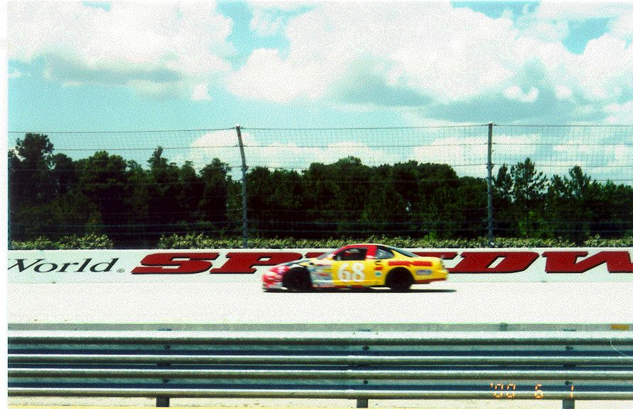

Yes, I was disappointed with how slowly I went.
My results were
| Lap Time | Top mph | Top RPM | |
|---|---|---|---|
| lap 001 | WARM UP | ||
| lap 002 | 0.54.95 | 105.5 | 4,659.5 |
| lap 003 | 0.51.69 | 109.6 | 4,841.9 |
| lap 004 | 0.53.47 | 107.3 | 4,739.5 |
| lap 005 | 0.52.13 | 109.1 | 4,816.0 |
| lap 006 | 0.53.27 | 107.6 | 4,750.7 |
| lap 007 | 0.52.52 | 108.5 | 4,793.3 |
| lap 008 | 0.49.23 | 113.1 | 4,995.6 |
| lap 009 | 0.51.22 | 110.3 | 4,870.1 |
| lap 010 | COOL DOWN |
You have a pace car in front of you to limit your speed. But the
problem was I was so careful about keeping my distance he didn't
take me up to the 120-125 they allow 
And, really, I had no idea how fast I was going. I was watching his car all the time and didn't really see the guages (it was a manual transmission, but there was no shifting after you're on the track...), and there was no speedometer, and I didn't know the rpm conversions anyway.
I realized that, perhaps perhaps because of driving video games, I was very cautious with the accelerator. I afterwards reasoned they must have the cars set up so that was not necessary.
Conversely, I was less
cautious in the corners than they expected, I think, but had to brake
(yikes) several times when the pacer slowed severely in front of me.
Turned out afterwards that he was trying to "reel me in" that way, but
I kept thwarting him. 
Natural speed limit (top) for the course with the cars is supposedly about 145mph.
I can't find an exact lap distance. The course is something over a
mile, but no-one knows how much. If you assume a mile, my average
speed was about 70 mph ,
meaning a minimum speed of even less.
Oh well, it was a fun experience, but very expensive. I wish I
could have predicted the psychology properly.
Oh well, on the positive side, I didn't stall the engine on the
way out, as at least one of the other drivers did.